Three directions · One fixed room · 23 October 2026
Unit 408 hallway: three Opus directions (HD, HE, HF)
Three more hallway directions for Unit 408 around the same fixed idea: the owner's LEGO Art World Map 31203 hung at true scale (104 x 65 cm, bottom edge at 1.1 m) on the plain wall over a solid floor-standing dresser with six or more drawers whose top holds photos and keepsakes. In this set the map is centred 2.87 m from the living end so it clears the light switch near the living end. D Harbour Grey, the premium build (grey grooved lacquer, navy art glass, a chrome picture-light bar, a black-and-white rug, a slender grey-green tree), E Conservatory Sage, the value build (a sage-painted map wall, smoked-oak shaker drawers, woven sedge wall lamps, a green-grid rug, a bird-of-paradise) and F Charcoal Gallery, mid-price (a charcoal map wall, an espresso eight-drawer dresser, an amber-glass cube lamp, black gallery spots, a tall black mirror). Fixed in all three: both arches dark, the honey-amber parquet, Davies Beige blackout and voile with valance boards on the window run, no hallway aircon, no added ceiling light. The wall lights and wall paint are proposals; hallway lighting is still undecided. Nothing in the hallway is measured: conditional fit; hallway unmeasured.
A comparison for one chosen scheme. Quantities and budgets apply to that scheme. Star (☆) any piece in the schedules to collect it under Picks.
Harbour Grey
₱183,000–₱195,000Planning range Direction HEConservatory Sage
₱70,000–₱82,000Planning range Direction HFCharcoal Gallery
₱89,000–₱101,000Planning rangeThe fixed brief
What every scheme must satisfy
- 01
Three distinct hallway sets with the same wall composition: the owner's LEGO Art World Map 31203 at true scale (1040 x 650, bottom at 1100) over a solid floor-standing dresser with six or more drawers and a display top. No model or family repeats across the schemes, the Fable hallway sets (A, B, C and H), the Astra hallway set or the other rooms' claims.
- 02
Conditional fit; hallway unmeasured: the ceiling, the corridor width and length, both arches, the window run and the light switch position are accepted assumptions (ASSUMED.md); every plan and view depends on them until the tape numbers arrive.
- 03
The dressers, lamps, rugs, plants, the mirror and the wall lights are real catalogue products with a supplier photo, price and source link; the map is owner-supplied at nil and the wall paint (E, F) is a planning allowance, not a product.
- 04
Kept in every scheme: both arches dark, the parquet throughout, Davies Beige blackout + voile with valance boards on the window run (Seoul Blinds offer, priced in the curtain quote, not here), no hallway aircon, no added ceiling light; the wall lights are plug-in proposals, labelled as proposals.
Direction HD
Harbour Grey
a light-grey lacquer double dresser with finely grooved handleless fronts on steel legs, a navy art-glass lamp, a chrome LED bar over the map as a picture light, a bold black-and-white rug and a slender grey-green tree: cool, crisp and the map's blues carried into the lamp
This preview is awaiting the final local asset.
This preview is awaiting the final local asset.
This preview is awaiting the final local asset.
This preview is awaiting the final local asset.
Style renders are AI images (Codex image generation, sketch-to-render) painted over the dimension-led model views below, with the original parquet photo and the supplier product photos as references: a style interpretation of each scheme, not a dimension certification; check every piece against the schedule.

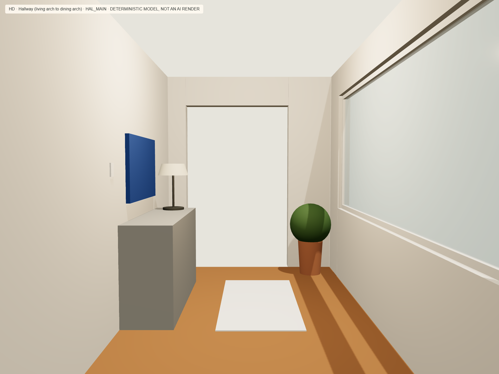

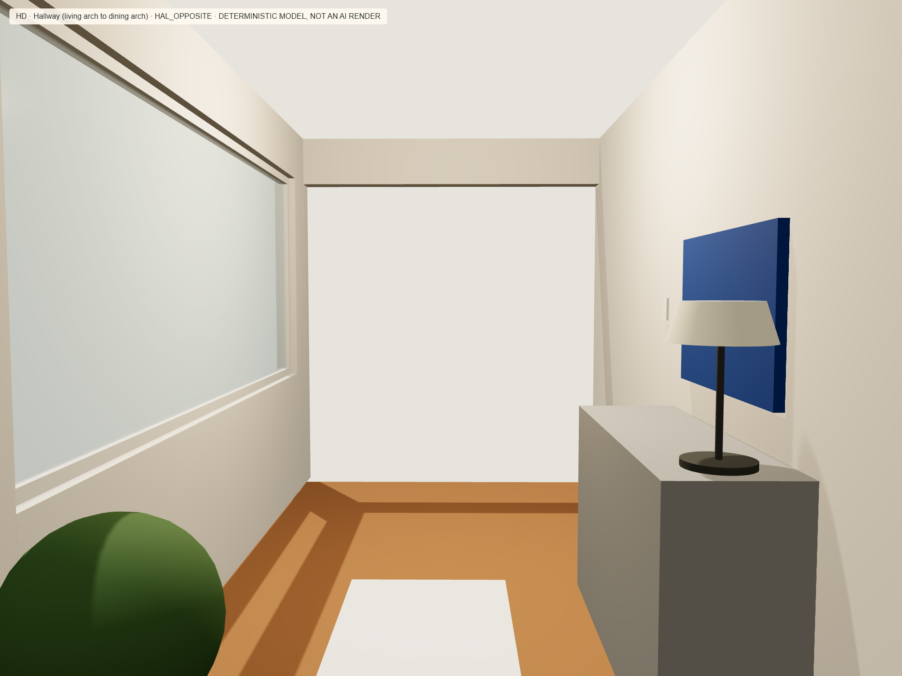

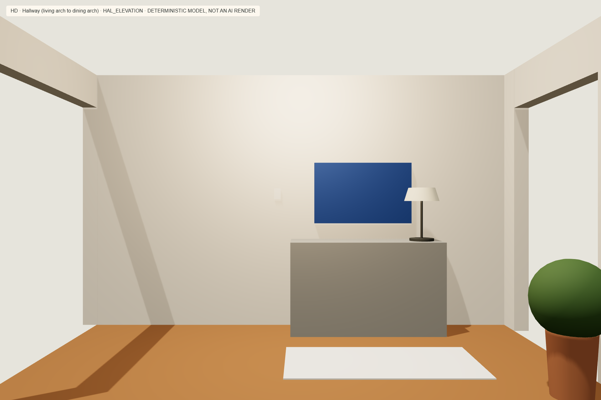

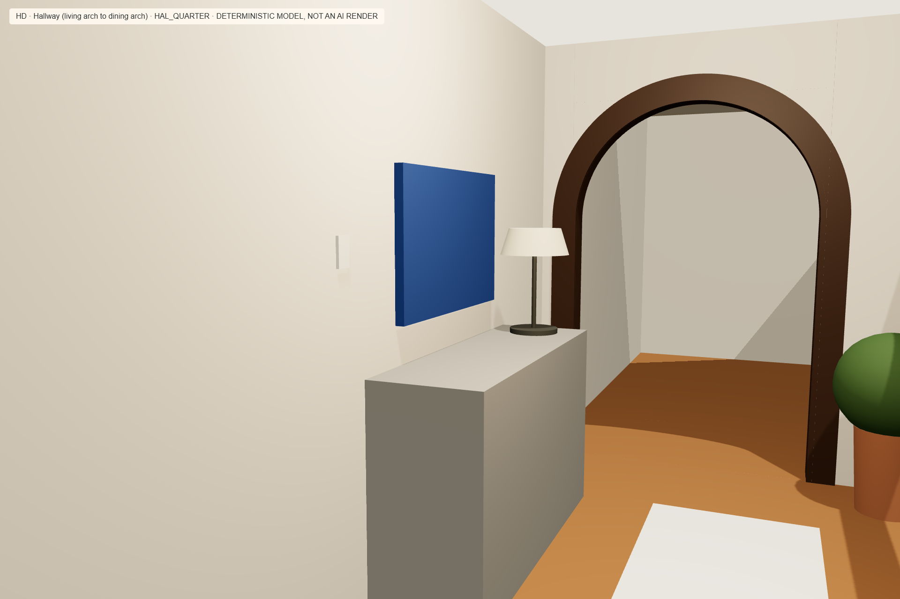
Model views are deterministic Three.js views of the audited Unit 408 shell (parquet, curtains, window, doors, closet, 75 in TV, new split AC) with the selected pieces as proxy forms at published or assumed sizes and the rug and art photos mapped to their rectangles; not AI renders, finishes approximate.
The reference board contains supplier product photographs.

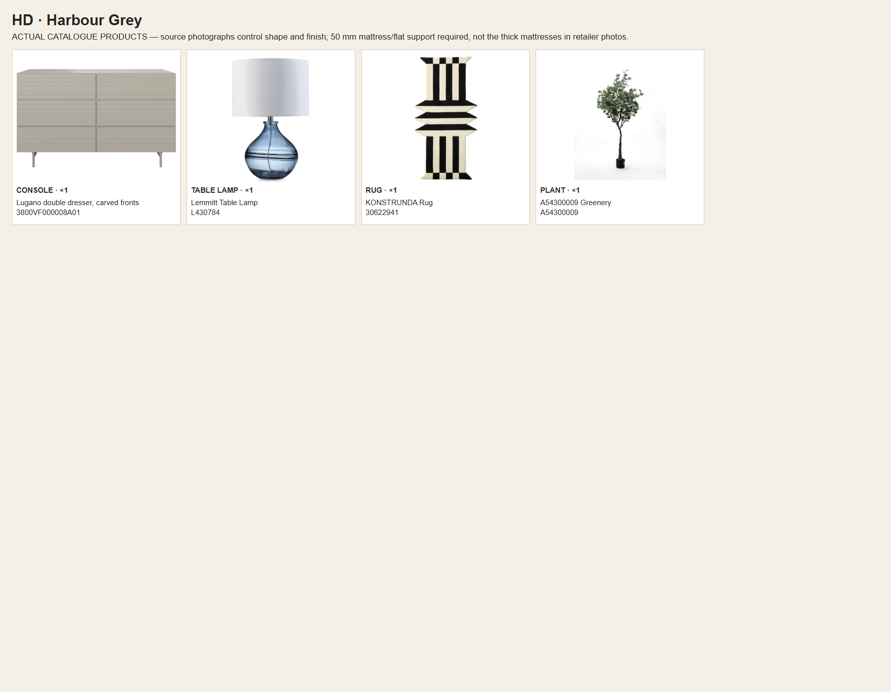

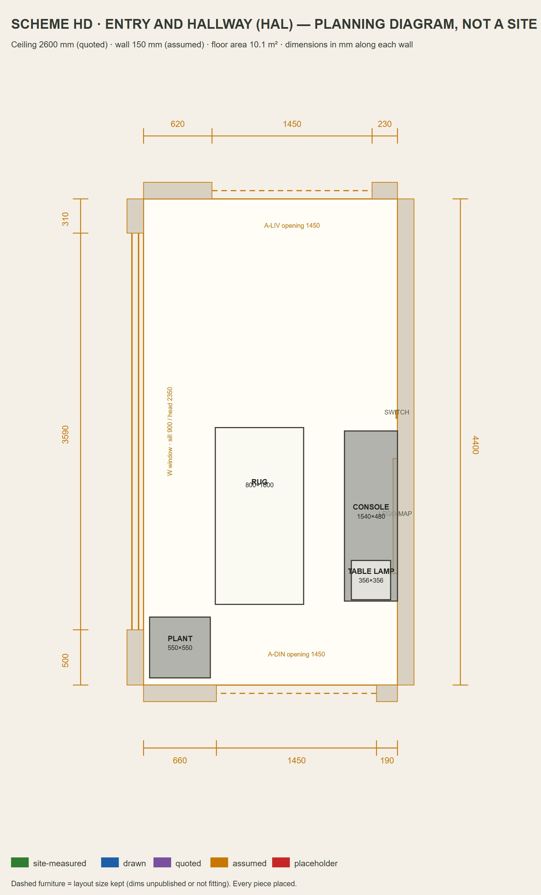
Space & fit
- BoConcept Lugano 1540 x 480 x 930: the tallest top of the three, so the map's bottom edge at 1100 leaves a 170 mm reveal (photos up to 13 x 18 cm stand under it); raise the map 80 mm to 1180 if a 250 mm reveal matters more than the 1.1 m line.
- The map (1040) is centred on the dresser (1540) with 250 mm of top free at each end; the chrome bar hangs about 120 mm above the map's top edge; the light switch stays about 120 mm beyond the dresser's living end.
- Passage: 2300 (assumed) less 480 leaves about 1.82 m beside the dresser.
- Conditional fit; hallway unmeasured: ceiling, corridor width and length, arches, window run and switch are accepted assumptions (ASSUMED.md).
Every scheduled itemDirection HD · selected pieces4 rows
4 scheduled items
| Starred | Piece & exact variant | Qty / scheme | Unit price | Line price | Source & fulfillment |
|---|---|---|---|---|---|
consoleLugano double dresser, carved frontsLugano double dresser, carved fronts; manufacturer variant/SKU 3800VF000008A01; master 3800VF00; selected configuration codes: vaMaterial=0008; vaMaterialLeg=0128 Dimensions & source notesDimensions (mm): width: 1540; depth: 480; height: 930 Notes: Light-grey lacquer double dresser, six wide drawers with finely grooved handleless fronts, slim powder-coated steel legs; 1540 x 480 x 930. Solid, floor-standing, the display top for photos and keepsakes; the premium build of the three. Price basis: Per exact selected configuration; selected public product price.value, not the lower family starting-price field. Displayed selected RRP; no separate positive beforePrice published. |
1HD | ₱133,690Source price: 2026-09-10 | ₱133,690 | Catalog listed | Cebu delivery: unconfirmed | price date 2026-09-10 | BoConceptSupplier page ↗ | |
table lampLemmitt Table LampLemmitt Table Lamp; manufacturer SKU L430784; Navy Dimensions & source notesDimensions (mm): width: 355.6; depth: 355.6; height: 546.1 Notes: Round navy art-glass base with a white drum shade, 356 x 356 x 546; stands at the dining end of the dresser top, just past the map's edge. Price basis: Per listed item, exact official Philippine online variant price; not a confirmed Cebu branch quotation. |
1HD | ₱6,600Source price: 2026-09-08 | ₱6,600 | sold_out_online | Cebu delivery: unconfirmed | price date 2026-09-08 | AshleySupplier page ↗ | |
rugKONSTRUNDA RugKONSTRUNDA Rug, white/black, 80x160 cm; article 30622941 Dimensions & source notesDimensions (mm): width: 800; depth: 1600; height: 10 Notes: White and black bars with notched ends, 80 x 160 (published), long side along the corridor in front of the dresser; the parquet shows on every side. Price basis: Official Philippine product-page price for the complete selected listing/variant; included quantity follows the exact specification variant. Delivery and assembly are additional. |
1HD | ₱6,999Source price: 2026-09-10 | ₱6,999 | In stock according to source | Cebu delivery: unconfirmed | price date 2026-09-10 | IKEASupplier page ↗ | |
plantA54300009 GreeneryA54300009 Greenery; manufacturer SKU A54300009; Default Title Dimensions & source notesDimensions (mm): width: 550; depth: 550; height: 1500 Notes: Faux eucalyptus-style tree, small grey-green leaves on a slender trunk in a black pot; dims unpublished, estimated 550 x 550 x 1500 from the supplier photo, measure at the showroom. In the window-side corner at the dining end, clear of every view of the map. Price basis: Per exact listed official Philippine storefront variant; verify quantity/configuration in listing. Cebu branch quotation is not established. |
1HD | ₱10,000Source price: 2026-09-10 | ₱10,000 | online_variant_available_cebu_stock_unconfirmed | Cebu delivery: unconfirmed | price date 2026-09-10 | AshleySupplier page ↗ |


Direction HE
Conservatory Sage
the map wall painted soft sage, a smoked-oak shaker dresser with round knobs, a pair of woven sedge wall lamps flanking the map, an off-white rug with a fine green grid and a bird-of-paradise in the corner: a garden-room hallway where the map is framed by green
This preview is awaiting the final local asset.
This preview is awaiting the final local asset.
This preview is awaiting the final local asset.
This preview is awaiting the final local asset.
Style renders are AI images (Codex image generation, sketch-to-render) painted over the dimension-led model views below, with the original parquet photo and the supplier product photos as references: a style interpretation of each scheme, not a dimension certification; check every piece against the schedule.

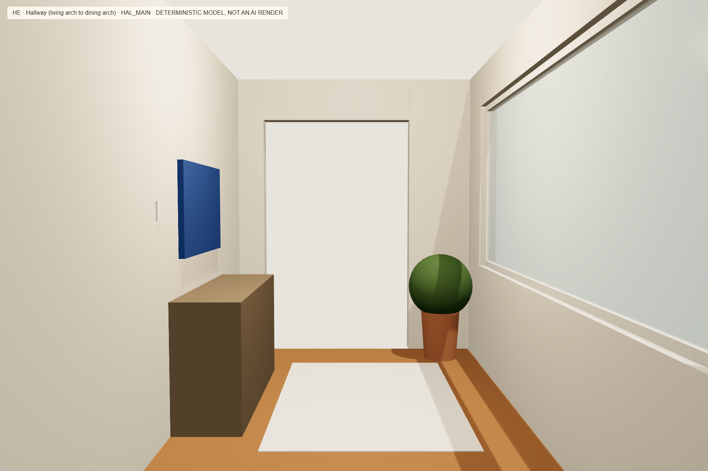

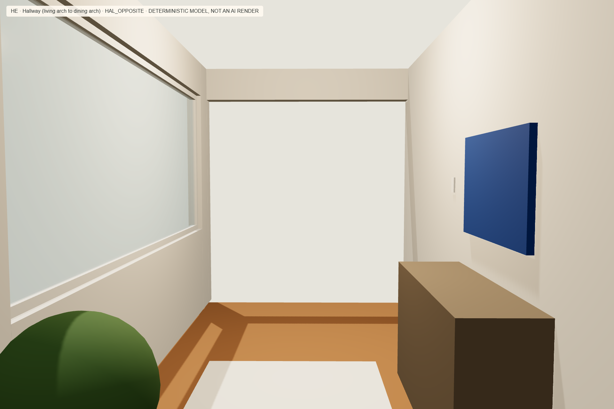

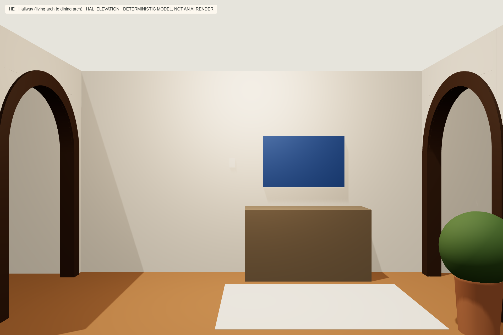

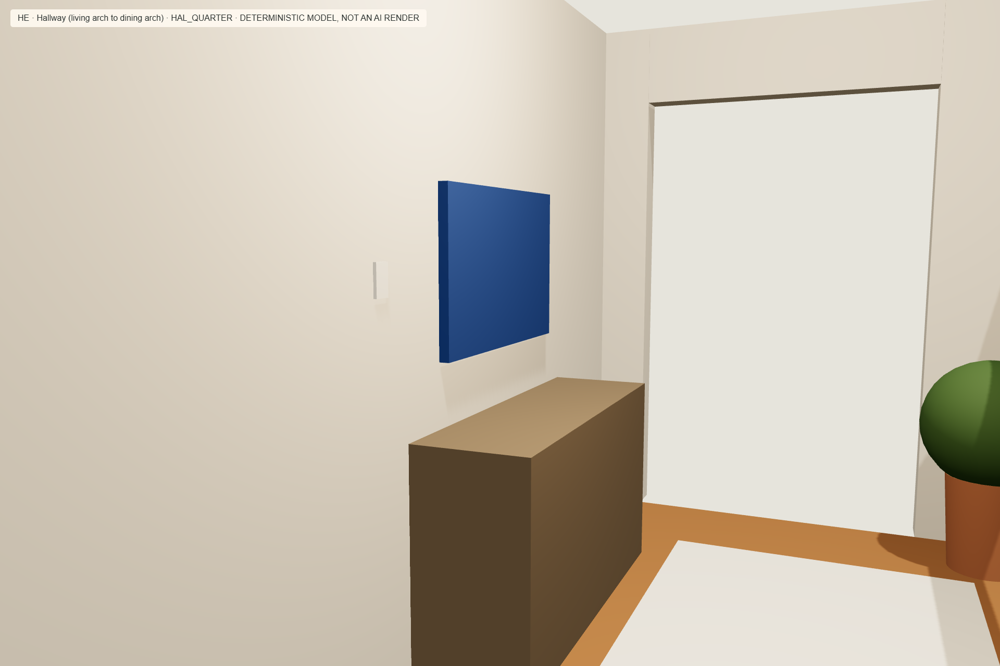
Model views are deterministic Three.js views of the audited Unit 408 shell (parquet, curtains, window, doors, closet, 75 in TV, new split AC) with the selected pieces as proxy forms at published or assumed sizes and the rug and art photos mapped to their rectangles; not AI renders, finishes approximate.
The reference board contains supplier product photographs.

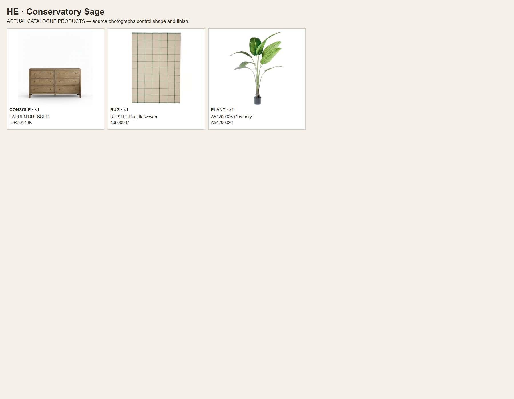

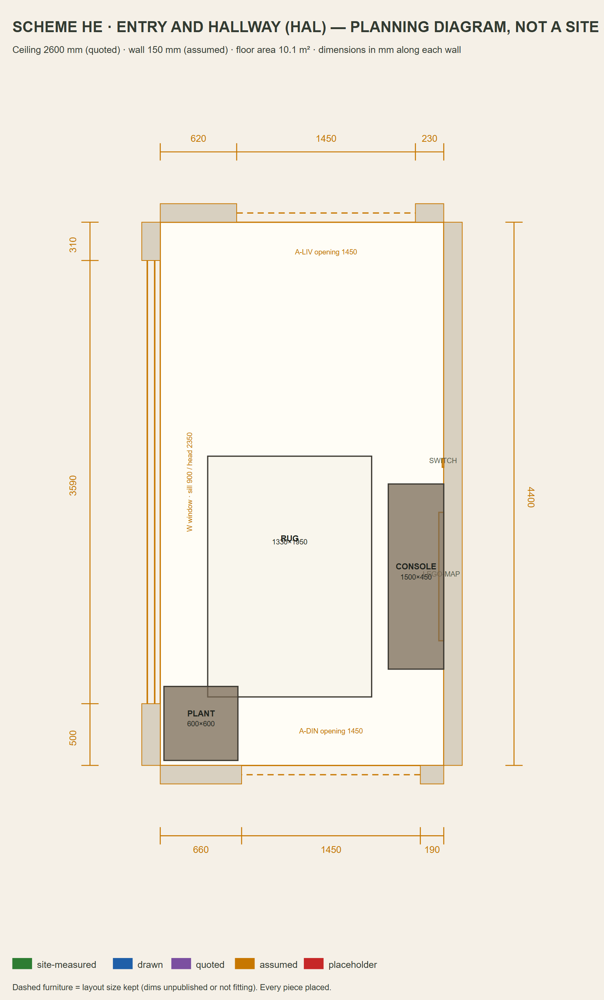
Space & fit
- BLIMS Lauren 1500 x 450 x 850: top at 850 leaves the 250 mm reveal under the map; 230 mm of top free at each end of the map for frames and a bowl, no table lamp.
- The woven wall lamps sit 150 mm outside the map's side edges, shades at 1.55 to 1.85 m; the left one stays 40 mm right of and 80 mm above the assumed switch plate, so the switch position must be taped before drilling.
- Passage: 2300 (assumed) less 450 leaves about 1.85 m.
- Conditional fit; hallway unmeasured: ceiling, corridor width and length, arches, window run and switch are accepted assumptions (ASSUMED.md).
Every scheduled itemDirection HE · selected pieces3 rows
3 scheduled items
| Starred | Piece & exact variant | Qty / scheme | Unit price | Line price | Source & fulfillment |
|---|---|---|---|---|---|
consoleLAUREN DRESSERDefault published variant; SKU IDRZ0149K Dimensions & source notesDimensions (mm): width: 1500; depth: 450; height: 850 Notes: Smoked greige oak dresser, six shaker-framed drawers in two columns with small round knobs, short tapered legs; 1500 x 450 x 850. Top at 850 gives the 250 mm reveal under the map. Price basis: Published price for the selected listing variant |
1HE | ₱36,950Source price: 2026-09-10 | ₱36,950 | In stock according to source | Cebu delivery: unconfirmed | price date 2026-09-10 | BLIMS Fine FurnitureSupplier page ↗ | |
rugRIDSTIG Rug, flatwovenRIDSTIG Rug, flatwoven, off-white/green, 133x195 cm; article 40600967 Dimensions & source notesDimensions (mm): width: 1330; depth: 1950; height: 6 Notes: Off-white flatweave with a fine green grid, 133 x 195 (published), long side along the corridor in front of the dresser. Price basis: Official Philippine product-page price for the complete selected listing/variant; included quantity follows the exact specification variant. Delivery and assembly are additional. |
1HE | ₱1,499Source price: 2026-09-10 | ₱1,499 | In stock according to source | Cebu delivery: unconfirmed | price date 2026-09-10 | IKEASupplier page ↗ | |
plantA54200036 GreeneryA54200036 Greenery; manufacturer SKU A54200036; Default Title Dimensions & source notesDimensions (mm): width: 600; depth: 600; height: 1500 Notes: Faux bird-of-paradise with broad paddle leaves in a black pot; dims unpublished, estimated 600 x 600 x 1500 from the supplier photo, measure at the showroom. In the window-side corner at the dining end. Price basis: Per exact listed official Philippine storefront variant; verify quantity/configuration in listing. Cebu branch quotation is not established. |
1HE | ₱9,900Source price: 2026-09-10 | ₱9,900 | online_variant_available_cebu_stock_unconfirmed | Cebu delivery: unconfirmed | price date 2026-09-10 | AshleySupplier page ↗ |


Direction HF
Charcoal Gallery
the map wall painted deep charcoal, an espresso eight-drawer dresser with a reeded bottom row, an amber-glass cube lamp with a linen shade, two black gallery spots over the map, an off-white diamond-lattice rug and a tall black-framed mirror at the living end: the map lit like an exhibit
This preview is awaiting the final local asset.
This preview is awaiting the final local asset.
This preview is awaiting the final local asset.
This preview is awaiting the final local asset.
Style renders are AI images (Codex image generation, sketch-to-render) painted over the dimension-led model views below, with the original parquet photo and the supplier product photos as references: a style interpretation of each scheme, not a dimension certification; check every piece against the schedule.

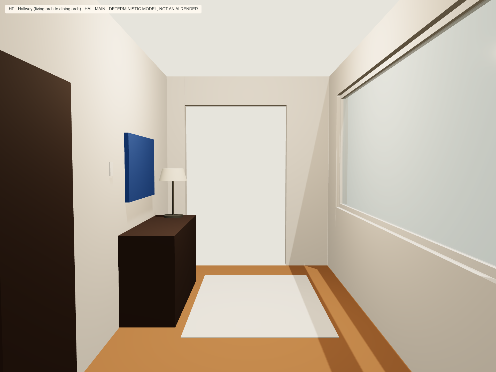

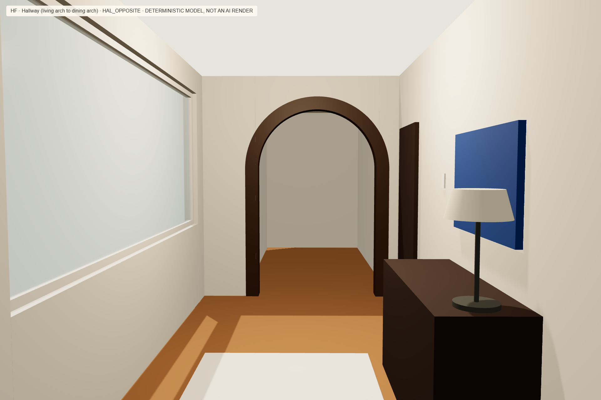

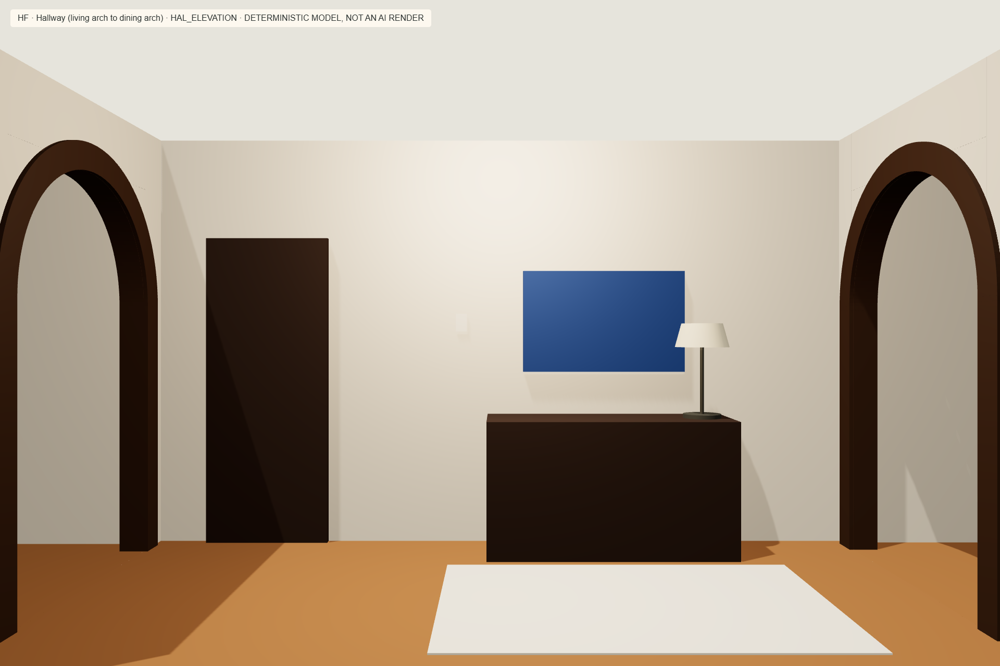

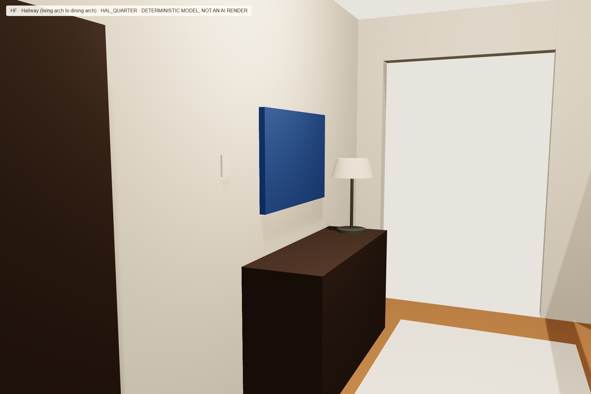
Model views are deterministic Three.js views of the audited Unit 408 shell (parquet, curtains, window, doors, closet, 75 in TV, new split AC) with the selected pieces as proxy forms at published or assumed sizes and the rug and art photos mapped to their rectangles; not AI renders, finishes approximate.
The reference board contains supplier product photographs.

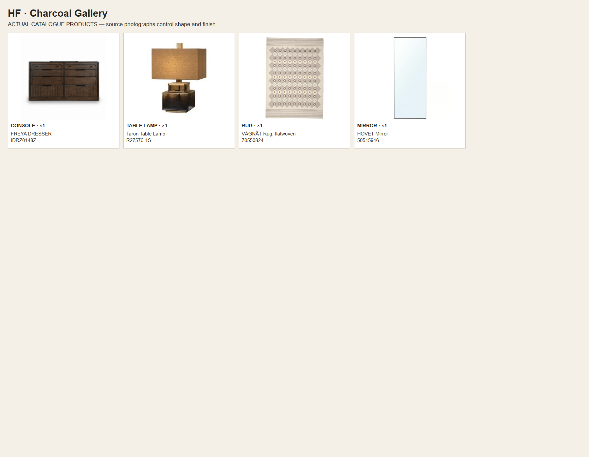

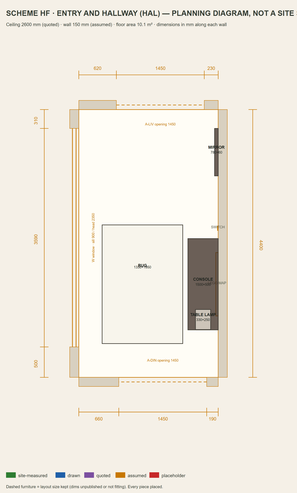
Space & fit
- BLIMS Freya 1500 x 500 x 825: the lowest top gives a 275 mm reveal; the deepest dresser of the three, so 2300 (assumed) less 500 leaves about 1.80 m of passage.
- The HOVET mirror (780 x 1960) leans at the living end of the plain wall, y 310 to 1090, more than 800 mm short of the switch; the two black spots sit above the map's top corners and aim down at it.
- Conditional fit; hallway unmeasured: ceiling, corridor width and length, arches, window run and switch are accepted assumptions (ASSUMED.md).
Every scheduled itemDirection HF · selected pieces4 rows
4 scheduled items
| Starred | Piece & exact variant | Qty / scheme | Unit price | Line price | Source & fulfillment |
|---|---|---|---|---|---|
consoleFREYA DRESSERDefault published variant; SKU IDRZ0148Z Dimensions & source notesDimensions (mm): width: 1500; depth: 500; height: 825 Notes: Dark espresso dresser, eight drawers in two columns, the bottom row with reeded fronts, slim dark pulls; 1500 x 500 x 825. The most drawers and the lowest top of the three. Price basis: Published price for the selected listing variant |
1HF | ₱26,212Source price: 2026-09-10 | ₱26,212 | In stock according to source | Cebu delivery: unconfirmed | price date 2026-09-10 | BLIMS Fine FurnitureSupplier page ↗ | |
table lampTaron Table LampTaron Table Lamp; official listing SKU R27576-1S Dimensions & source notesDimensions (mm): width: 330; depth: 250; height: 584 Notes: Dark amber-to-smoke glass cube base with brass fittings under a rectangular natural linen shade, 58 cm high (published); footprint estimated at 330 x 250 from the supplier photo; at the dining end of the dresser top. Price basis: Per selected exact variant Default Title; published PHP variant price, not a from-price. Table only; chairs or styling accessories not assumed included. |
1HF | ₱26,944Source price: 2026-09-09 | ₱26,944 | Out of stock according to source | Cebu delivery: unconfirmed | price date 2026-09-09 | Mejore HomeSupplier page ↗ | |
rugVÄGNÄT Rug, flatwovenVÄGNÄT Rug, flatwoven, off-white gray/handmade, 133x195 cm; article 70550824 Dimensions & source notesDimensions (mm): width: 1330; depth: 1950; height: 8 Notes: Handmade off-white flatweave with a grey diamond lattice and small ochre accents, 133 x 195 (published), long side along the corridor. Price basis: Official Philippine product-page price for the complete selected listing/variant; included quantity follows the exact specification variant. Delivery and assembly are additional. |
1HF | ₱5,499Source price: 2026-09-10 | ₱5,499 | In stock according to source | Cebu delivery: unconfirmed | price date 2026-09-10 | IKEASupplier page ↗ | |
mirrorHOVET MirrorHOVET Mirror, black, 78x196 cm; article 50515916 Dimensions & source notesDimensions (mm): width: 780; depth: 60; height: 1960 Notes: Tall mirror in a thin black frame, 780 x 1960, leaning on the plain wall at the living end, well clear of the light switch; it reflects the curtained window run. Price basis: Official Philippine product-page price for the complete selected listing/variant; included quantity follows the exact specification variant. Delivery and assembly are additional. |
1HF | ₱7,999Source price: 2026-09-10 | ₱7,999 | In stock according to source | Cebu delivery: unconfirmed | price date 2026-09-10 | IKEASupplier page ↗ |


Your shortlist
Starred pieces
Star ☆ any piece in the schedules above and it is listed here by direction with a running total. Stars are saved in this browser only. Use Copy link to send them to someone else (the link opens with the same stars) or Copy as text for a message.
No starred pieces yet.
Plain-text list
Compare the complete plan
Budgets, with the open costs visible
Quoted work and fulfillment remain unresolved. The planning ranges include the allowances below, plus 10% contingency, rounded up to ₱1,000.
| Per chosen scheme | HDHarbour Grey | HEConservatory Sage | HFCharcoal Gallery |
|---|---|---|---|
| Selected design pieces | ₱157,289 | ₱48,349 | ₱66,654 |
| Common essentials & room treatments | ₱2,499 | ₱8,598 | ₱7,398 |
| Priced schedule subtotal | ₱159,788 | ₱56,947 | ₱74,052 |
| Working planning range | ₱183,000 to ₱195,000 | ₱70,000 to ₱82,000 | ₱89,000 to ₱101,000 |
Planning allowances ₱6,000–₱17,000 before contingency
| Work or provision | Low | High | Basis & limits |
|---|---|---|---|
| Cebu delivery and handling (one dresser, small goods) | ₱3,000 | ₱8,000 | Planning allowance only; no shipping rates or address allocation obtained. |
| LEGO map hanging, dresser levelling and anchoring, wall-light fixing and cord channels | ₱3,000 | ₱9,000 | Planning allowance only; the map hangs on its own LEGO brackets; installer to verify the substrate and anchor the dresser to the wall. |
Shared foundations
Common essentials & fixed room treatments
The fixed curtains and listed technical essentials are common room provisions. Scheme letters show where each row applies; quantities are per chosen scheme.
Every scheduled itemCommon room schedule6 rows · 1 quote required
6 scheduled items
| Starred | Piece & exact variant | Qty / scheme | Unit price | Line price | Source & fulfillment |
|---|---|---|---|---|---|
wall lightFLASKPOST LED cabinet/wall lightFLASKPOST LED cabinet/wall light, chrome plated, 82 cm; article 40591091 Dimensions & source notesDimensions (mm): width: 820; depth: 140; height: 40 Notes: Lighting proposal (hallway lighting undecided): an 82 cm chrome LED bar mounted about 120 mm above the map's top edge, angled at the mosaic like a picture light; installer to confirm hardwiring or a plug-in lead from the outlet behind the dresser. Price basis: Official Philippine product-page price for the complete selected listing/variant; included quantity follows the exact specification variant. Delivery and assembly are additional. |
1HD | ₱2,499Source price: 2026-09-10 | ₱2,499 | In stock according to source | Cebu delivery: unconfirmed | price date 2026-09-10 | IKEASupplier page ↗ | |
wall lightMÅNALG Wall lampMÅNALG Wall lamp, sedge/handmade; article 90483895 Dimensions & source notesDimensions (mm): width: 350; depth: 180; height: 290 Notes: Lighting proposal (hallway lighting undecided): a pair of woven sedge wall lamps 150 mm outside the map's side edges, shades at about 1.55 to 1.85 m; plug-in leads in wall-coloured cord channels down to the outlet behind the dresser. Price basis: Official Philippine product-page price for the complete selected listing/variant; included quantity follows the exact specification variant. Delivery and assembly are additional. |
2HE | ₱1,299Source price: 2026-09-10 | ₱2,598 | In stock according to source | Cebu delivery: unconfirmed | price date 2026-09-10 | IKEASupplier page ↗ | |
wall paintSage-green paint on the plain (map) wallSoft sage green, washable matte, skirting to cornice on the plain wall only (about 4.4 x 2.7 m); the other walls stay off-white Dimensions & source notesDimensions (mm): width: 4400; depth: 1; height: 2700 Notes: Wall-treatment proposal for scheme E only; repaint to off-white is the fallback. Price basis: allowance |
1HE | ₱6,000Source price: 2026-10-20 | ₱6,000 | Planning allowance (paint and labour); no colour card chosen, no quote obtainedSupplier quote pending | |
wall lightSKURUP Wall lampSKURUP Wall lamp, black; article 70357379 Dimensions & source notesNotes: Lighting proposal (hallway lighting undecided): two black plug-in wall spots above the map's top corners, aimed down at the mosaic like gallery lights; cords in charcoal cord channels to the outlet behind the dresser. Price basis: Official Philippine product-page price for the complete selected listing/variant; included quantity follows the exact specification variant. Delivery and assembly are additional. |
2HF | ₱699Source price: 2026-09-10 | ₱1,398 | In stock according to source | Cebu delivery: unconfirmed | price date 2026-09-10 | IKEASupplier page ↗ | |
wall paintCharcoal paint on the plain (map) wallDeep warm charcoal, washable matte, skirting to cornice on the plain wall only (about 4.4 x 2.7 m); the other walls stay off-white Dimensions & source notesDimensions (mm): width: 4400; depth: 1; height: 2700 Notes: Wall-treatment proposal for scheme F only; repaint to off-white is the fallback. Price basis: allowance |
1HF | ₱6,000Source price: 2026-10-20 | ₱6,000 | Planning allowance (paint and labour); no colour card chosen, no quote obtainedSupplier quote pending | |
artLEGO Art World Map 31203 (owner-supplied)11,695-piece mosaic, 104 x 65 cm assembled, hung on its own brackets in three panels; owned, not purchased Dimensions & source notesDimensions (mm): width: 1040; depth: 40; height: 650 Notes: At true scale on the plain wall: bottom edge 1100, top 1750, centred 2870 from the living end (edges 2350 to 3390), clear of the light switch toward the living end; 170 to 275 mm over each scheme's dresser top. Ivan, 23 Oct: 'make sure the lego map on the wall is up to scale'. Price basis: owned |
1HD/HE/HF | Quote required | Quote required | Owned; priced at nil; modelled as a fixed room elementSupplier quote pending |


Before ordering
Resolve these procurement gates
- Prices are frozen 20 Oct 2026 catalogue references with each line's own price date. Product existence and photos are verified; exact Cebu stock, address delivery and checkout totals are not.
- No scheme is purchase-ready until the hallway is taped: the light switch position against the map and the wall lights, the corridor length, the dresser depth against the passage width, and the map's hanging height against the dresser top.
- Hallway lighting is undecided (Ivan, 23 Oct): the picture-light bar (D), the woven wall lamps (E) and the gallery spots (F) are proposals; confirm a plug-in route from the outlet behind the dresser before ordering.
- Pieces flagged "dims unpublished" or "partial" in the room placement report (the plant in E, the rug lengths) keep the layout size; measure them at the showroom before ordering.
- Style renders are AI interpretations painted over the dimension-led model views; the supplier photo boards, the plan and the item schedule are the acceptance basis.
Source notes
- Pieces come from the frozen 20 Oct 2026 catalogue export (prices as published that day); photos are the suppliers' own. No Airtable writes.
- Room geometry: no drawing and no tape for the hallway; the room file carries accepted assumptions from the F034 and F035 photo camera fits and Ivan's 23 Oct answers (see ASSUMED.md). This set centres the map 2.87 m from the living end because the F035 fit places the light switch 1.65 to 2.25 m from the living end.
- The LEGO Art World Map 31203 is the owner's, priced at nil and modelled as a fixed element at its published 1040 x 650; curtains per the Seoul Blinds quote are not priced in these sets.
- Models and families were checked against the Fable and Astra hallway sets and the other rooms' claims (uniqueness.py).